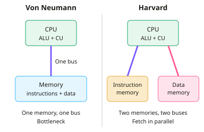

A-level Computer Science Year 12 · Topic 11
Processor architectures and assembly language
Processor architectures and assembly language looks inside the C P U and at the instructions it actually runs.
We will compare Von Neumann, Harvard and modern architectures, and the factors that affect performance.
Then we study pipelining, C I S C and R I S C, G P Us and parallel systems, assembly language and the Little Man Computer, and addressing modes.
- 7 subtopics
- 169 questions
- Free: 11.1 notes and 10 questions
In this topic
- 11.1Von Neumann, Harvard and contemporary architecturesFree below · 19 questions
- 11.2Factors affecting processor performance: clock speed, cores, cache, word length and bus widthOpen in Full Marks · 30 questions
- 11.3Pipelining in the fetch-decode-execute cycleOpen in Full Marks · 20 questions
- 11.4CISC and RISC processorsOpen in Full Marks · 18 questions
- 11.5GPUs, multicore and parallel systemsOpen in Full Marks · 30 questions
- 11.6Assembly language and the Little Man ComputerOpen in Full Marks · 32 questions
- 11.7Machine code instruction formats and addressing modesOpen in Full Marks · 20 questions
11.1 · Free notes
Von Neumann, Harvard and contemporary architectures

Key points
- The Von Neumann architecture uses a single shared memory and a single set of buses for both instructions and data. It is built on the stored program concept: programs are held in main memory as binary alongside data.
- Main components: ALU, control unit, registers (PC, MAR, MDR, CIR, ACC), main memory, I/O and the buses (address, data, control).
- Because instructions and data are stored in the same way, a program can be treated as data. It can be loaded, changed or overwritten, and a general-purpose computer can run any program.
- The Von Neumann bottleneck: instructions and data share one bus, so the CPU cannot fetch an instruction and read or write data at the same time. Bus bandwidth then limits performance.
- The Harvard architecture has physically separate instruction memory and data memory, each with its own bus and address space. An instruction and a data item can therefore be fetched simultaneously.
- Advantages of Harvard: faster, parallel access to instructions and data. Instruction memory can be read-only, which protects the program from being overwritten. The two memories can have different word widths.
- Disadvantages of Harvard: more complex and costly hardware (extra buses and pins), and memory use is less flexible. Spare data memory cannot hold instructions, and the reverse also applies.
- Harvard is typical of embedded systems, microcontrollers and DSPs (digital signal processors). The fixed program sits in ROM or flash and the working data in RAM, as in a washing machine controller.
- Contemporary processors use a modified Harvard design. Main memory is unified (von Neumann style), but each core has separate L1 instruction and data caches, so instruction and data fetches overlap.
- Contemporary designs also add several cores, pipelining and multi-level cache to reduce the von Neumann bottleneck. Software still sees one unified memory.
- Exam tip: compare the two by memory (shared or separate), buses (one or two sets), parallel fetch (no or yes) and typical use (general-purpose PC or embedded device). Always link the bottleneck to the shared bus.
In more detail
- Worked bottleneck: in Von Neumann, instructions and data share one bus, so the CPU can only fetch one at a time.
- Worked Harvard benefit: separate instruction and data memories let the CPU fetch the next instruction while reading data, so DSPs and many microcontrollers use it.
- Worked modern hybrid: most CPUs use one main memory but split their L1 cache into separate instruction and data caches.
- Worked flexibility: in Harvard designs, instruction and data memories can even use different word lengths and technologies.
Practice
Von Neumann, Harvard and contemporary architectures: 10 questions
Pick an answer to check it, or open the answer for the explanation.
1. Which feature defines the Von Neumann architecture?
- Each core has its own main memory
- Instructions are held only in ROM
- Instructions and data share one memory and bus
- Separate buses for instructions and data
Show answer
C: Instructions and data share one memory and bus. Von Neumann uses a single memory and a single set of buses for both instructions and data (the stored program concept). Separate memories and buses describe Harvard.
2. What is the Von Neumann bottleneck?
- Instructions and data compete for one shared bus
- The ALU is too slow to execute instructions
- Main memory cannot store programs
- The clock cannot exceed 1 GHz
Show answer
A: Instructions and data compete for one shared bus. Because one bus carries both instructions and data, the CPU cannot fetch an instruction and access data at once. This limits throughput.
3. Which is a key advantage of the Harvard architecture?
- It needs no cache memory
- An instruction and a data item can be fetched simultaneously
- Programs can easily modify themselves
- It needs fewer buses and less hardware
Show answer
B: An instruction and a data item can be fetched simultaneously. Separate instruction and data memories, each with its own bus, allow parallel access. The cost is more complex and expensive hardware.
4. A washing machine controller has its program in ROM and its sensor data in RAM. Which architecture suits it best?
- Von Neumann with a single shared memory
- Neither, because it has no memory
- Quantum
- Harvard
Show answer
D: Harvard. Embedded devices with a fixed program in ROM and working data in RAM suit Harvard. It protects the program and gives parallel fetches.
5. What does the stored program concept mean?
- Programs run without a processor
- Instructions are held in memory as binary, like data
- Programs are kept on the hard disk only
- The CPU stores data in the ALU
Show answer
B: Instructions are held in memory as binary, like data. The stored program concept means instructions are stored in main memory in binary alongside data. The CPU fetches them one at a time to execute.
6. A CPU has separate L1 instruction and data caches but one unified main memory. This is best described as:
- A pure Harvard design
- A modified Harvard design
- A pure Von Neumann design
- A non-stored-program design
Show answer
B: A modified Harvard design. Contemporary CPUs split the L1 cache (Harvard-style) but use unified main memory (Von Neumann-style). This is called a modified Harvard architecture.
7. Each instruction needs one bus transfer to fetch it and one to read data. Over 100 such instructions, how many bus transfers are needed on a single-bus Von Neumann machine?
- 400
- 200
- 150
- 100
Show answer
B: 200. Each instruction needs 2 transfers, so 100 × 2 = 200 on a single shared bus. A Harvard machine could overlap the pair, needing about 100 transfer times.
8. Which statement about Harvard architecture is correct?
- Instruction and data memories may have different word widths
- It always has fewer buses than Von Neumann
- It cannot be used in microcontrollers
- Instruction and data share one address space
Show answer
A: Instruction and data memories may have different word widths. Separate memories can differ in size and word width. Harvard needs more buses and has separate address spaces, and it is common in microcontrollers.
9. Why is read-only instruction memory in a Harvard system a security benefit?
- It removes the need for an operating system
- The CPU runs at a higher clock speed
- Faulty or malicious data writes cannot overwrite the program
- Data cannot be stored at all
Show answer
C: Faulty or malicious data writes cannot overwrite the program. Because instructions are in a separate, often read-only, memory, data writes cannot corrupt or replace the program code.
10. Which pair of components is part of the Von Neumann model?
- Two separate instruction buses
- Dual instruction and data memories
- A dedicated graphics bus only
- Control unit and ALU
Show answer
D: Control unit and ALU. The Von Neumann model includes an ALU, control unit, registers, main memory, I/O and buses. Separate instruction and data memories belong to Harvard.
Keep going in Full Marks
Full Marks has 19 questions on Von Neumann, Harvard and contemporary architectures (9 more than here), set out in practice levels. You also get notes and 3D models for all 7 subtopics of Processor architectures and assembly language, plus games, timed exams and past papers.